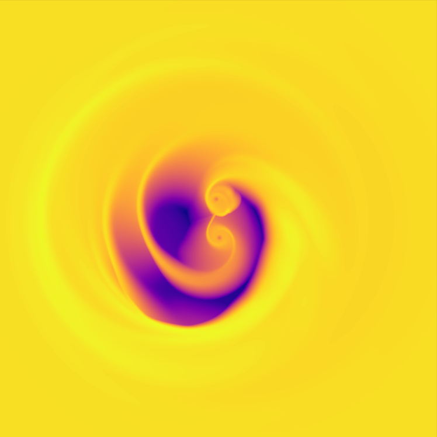
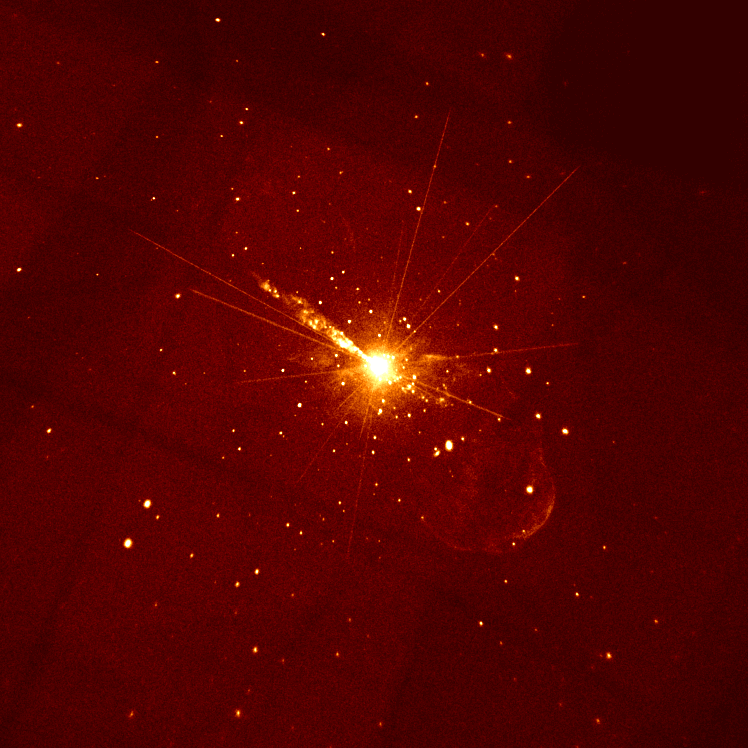

Undergraduate Physics Major and Math Minor | Aspiring Astrophysicist
I'm an undergraduate physics major at Clemson University. My research interests lie in compact objects and their associated electromagnetic and gravitational wave emission. I am also particularly interested in the plasma dynamics that occur around these compact objects and compact binaries and any multi-messenger observables that arise from them. The rich, complex dynamics of these systems especially fascinate me, given the many intriguing aspects that remain unexplored.
Under the direction of Dr. Jonathan Zrake, I utilized our research group's GPU-accelerated hydrodynamical code Sailfish alongside the Clemson Palmetto computing cluster to model supermassive black hole binary inspirals embedded in a gas accretion disk. I probed to what extent the orbital Mach number of the disk affects the torque exerted on the binary. This led to a novel multi-messenger prediction that links the pre-merger gravitational waveform dephasing of the binary to the post-merger electromagnetic rebrightening timescale.
Under the direction of Dr. Jay Strader and Dr. Ryan Urquhart through a collaboration with Michigan State University, I studied new and archival Chandra and XMM-Newton X-ray data of the galaxy Centaurus A, seen below. This was to probe for the existence of off-center supermassive black holes in ultra compact dwarfs, which are believed to be tidally stripped remnant cores of previously accreted galaxies, lying in the outer halo of the galaxy.
Below are two of my recent publications. One of which has been submitted to the Monthly Notices of the Royal Astronomical Society and the other to the American Astronomical Society.
You can view one of my publications as a standalone PDF by clicking the link below:
View Full Page PDFEmail: SamuelLFeyan@gmail.com